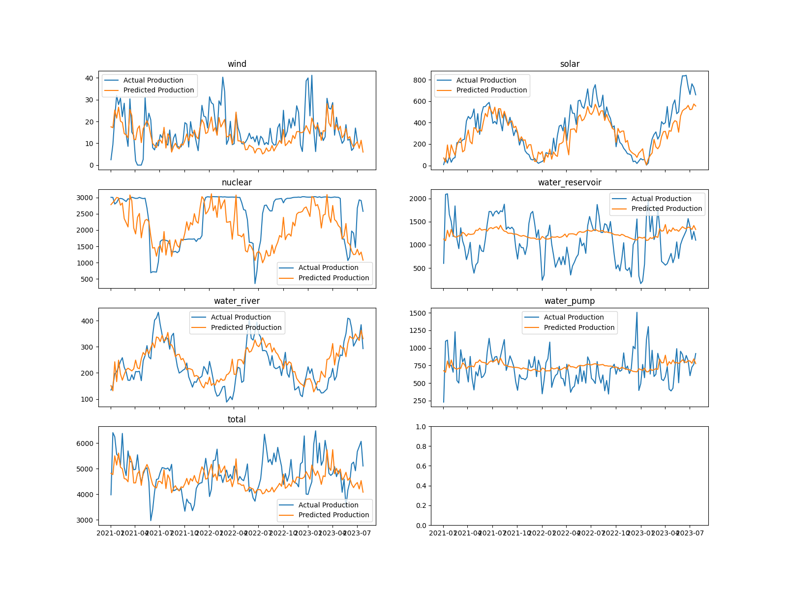

.
.
In the table below you can see the Energy-Features we used for the Modelling-Process. The data originates from entsoe.eu as mentioned on the subpage "Historic Energy".
In the table below you can see the calculated Weather Features we used for the Modelling-Process. As mentioned in the subpage "Historic Weather" the data-source originates from wetter2.com.
They provide Rain-Data, so we could use the Rain-Data directly from our data-source. For the Wind-Energy, we calculated it from the cubed Wind-Speed-Data provided by wetter2.com as well. The Heating-Demand was calculated ax the negative deviation of the average temperature from 14°C. So if the average temperature in Switzerland was 12°C, the heating-demand would be 2°C, while 16°C would be 0°C.
The solar-power was calculated by the following formula: .
We used a Jupyter-Notebook and the numpy-Library to calculate the Solar-Power above clouds as followed:
 .
.
The used Solar-Power below clouds, was then calculated by multiplying the Solar-Power-Above-Clouds with the Cloud-Percentage provided by our data-source.
Before we started with the Modelling-Process we decided to do some analysis with a Regression-Plot to see, if there are some promising features to model. We used the seaborn-Library to plot all combination between our Input-Features (weather-calculations) and our Target-Features (energy-production). As you can see below, there are some combination that look related, like the solar-production and solar-power available.

We decided to use a linear regression model, specifically the Partial Least Squares (PLS) algorithm. PLS is suitable for handling complex data with potential correlations, even without a necessary causal relationship. The algorithm identifies the most significant components in the data. In our case, we chose to utilize only the two most important components.
In the tables below, you can observe the x-weights and y-weights generated by the PLS algorithm. These weights are used by the model to determine the most influential components for fitting the data.
We decided to test the model using the 2022 data, based on the dataset from 2021. Upon evaluation, it is evident that some features are predicted accurately, while others show a lack of reliability in our model.
 {% endblock %} {% block footer %}{{ super() }}{% endblock %}